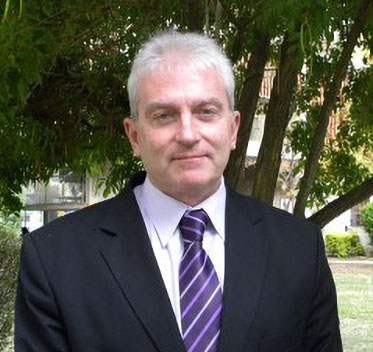

Profesor
Juan Carlos Alby
Es un filósofo, docente e investigador argentino de la Universidad Nacional del Litoral (UNL) especializado en Historia y Filosofía Medieval.
Actualmente es Profesor Titular por concurso ordinario de Filosofía medieval y renacentista en la Facultad de Humanidades y Ciencias (UNL), Profesor Titular de Antropología en la Facultad de Ciencias Médicas (UNL). Como investigador por el Rectorado de la Universidad Católica de Santa Fe, es presidente del Consejo de Investigaciones.
Es Profesor Titular de las asignaturas Historia de la filosofía antigua, Historia de la filosofía medieval, Metafísica y Seminario de Filosofía clásica en la Facultad de Humanidades de la Universidad Católica de las Misiones (UCAMI). Es docente estable del Doctorado en Humanidades con mención en Filosofía, de la FHUC-UNL y del Doctorado en Estudios patrísticos de la Universidad Católica de Cuyo, en la asignatura “Escatología patrística”.
Premios y distinciones
2011
“Filosofía y Teología en la Grecia antigua y en el medioevo”
UNRProfesor Extraordinario Visitante
Ha sido jurado de numerosos trabajos finales
y tesis de grado y de posgrado:
·Jurado de concursos docentes en universidades nacionales.
·Tesis de Licenciatura en Filosofía y de Doctorado
en Filosofía, Educación y Derecho.
2012
La propuesta ético teológica platónica: antecedentes en el presocratismo y ecos hasta fines del Medioevo”
UNRProfesor Extraordinario Visitante
Lector de la Biblioteca Bodleiana de Oxford otorgado
por la Bodleian Libraries, Oxford, en agosto de 2015.
Distinción otorgada por la Universidad Nacional del
Litoral el 15 de diciembre de 2015.
2015
Miembro representante de Argentina del Consejo Electivo de la AIEP-IAPS
Associaton of Patristic Studies,Oxford, England
Distinción otorgada por la Universidad Nacional del Litoral
Profesor Honorario de la Universidad Católica de Cuyo, según Resolución Nº 028 del CS-2017 en el marco del II Congreso Internacional de Estudios Patrísticos y I Encuentro de Estudios Patrísticos en Iberoamérica, a propuesta de la Facultad de Filosofía y Humanidades. Dada en San Juan el 6 de marzo de 2017
Director de la tesis ganadora del Premio Provincial Domingo Faustino Sarmiento de Ciencia e innovación, cuarta edición. Reconocimiento otorgado por la Secretaría de Estado de Ciencia, Tecnología e Innovación, San Juan, septiembre de 2017.